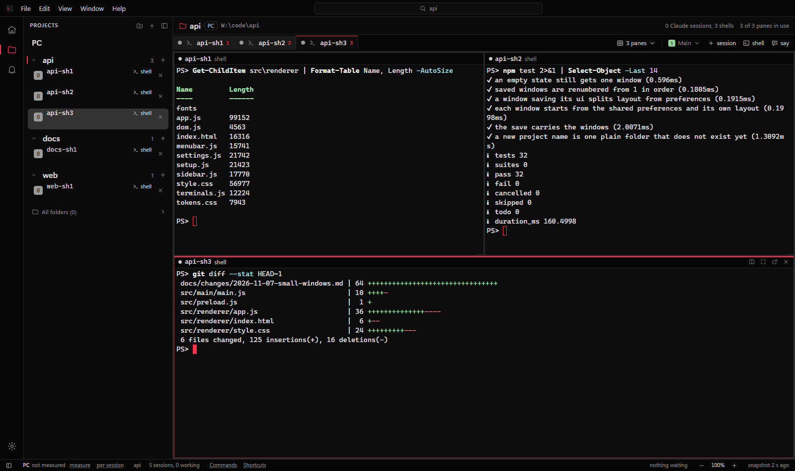
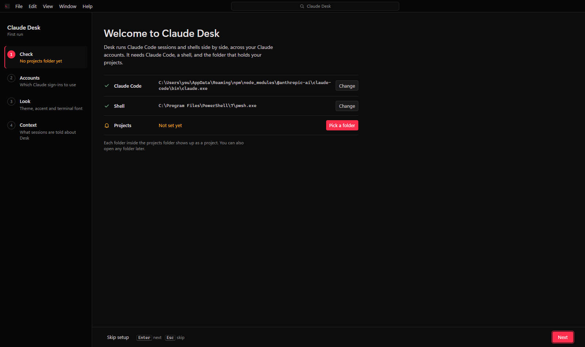
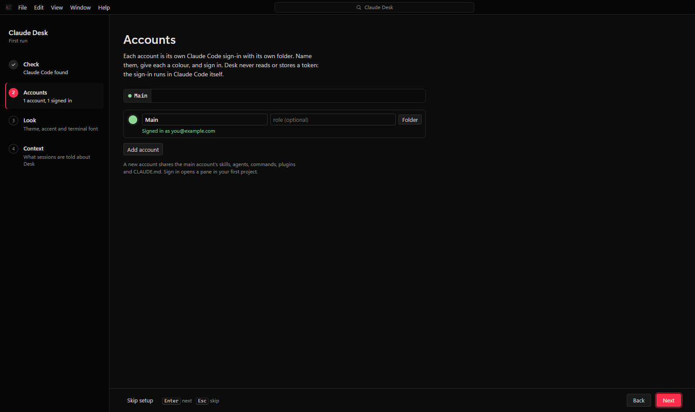
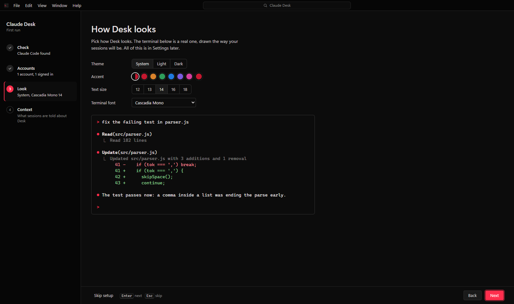
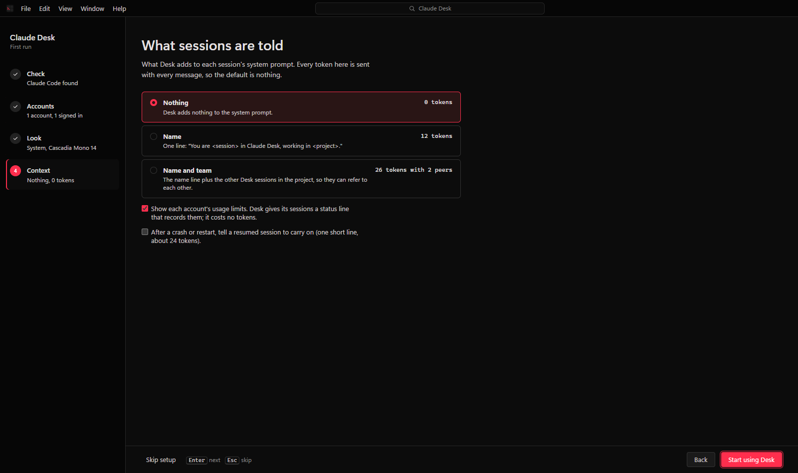
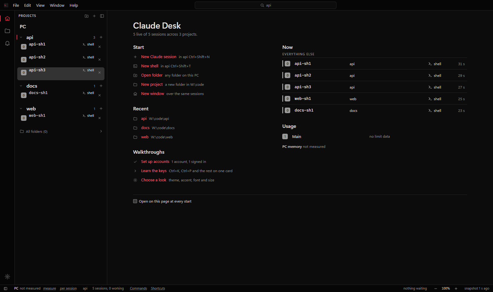

Claude Desk
A Windows app for running many Claude Code sessions side by side, across several Claude accounts, in panes and windows.

Your projects are listed on the left. Real claude terminals sit in tabs in the
middle, and you can show one to eight panes at once, in as many windows as you like. Desk
starts, shows, hides, stops and resumes sessions, and marks the ones waiting for you. It does
not wrap the chat, edit your files or show git: the terminal is Claude Code itself.
Each account gets its own Claude Code config folder, so logins never mix. Desk adds nothing to your prompts unless you ask it to, has no telemetry and no server.
Claude Desk is an independent project. It is not made by or affiliated with Anthropic.
Install
You need Windows 10 or 11, and Claude Code installed so that claude works in a
terminal. Desk finds claude.exe on its own, or you point it there in Settings.
PowerShell 7 is used for plain shells when it is installed; Windows PowerShell is the
fallback.
- Download
Claude-Desk-Setup-<version>.exefrom Releases. - Run it. The installer is not code signed yet, so SmartScreen says it does not recognise the app. Click More info, then Run anyway.
- It installs for your user only and needs no admin rights. Desk opens when it is done.
The installed app keeps itself up to date from GitHub Releases. See Updates.
First run
Setup fills the window, with its four steps on the left. Every step can be skipped and changed later in Settings. Enter goes on, Esc skips.




- Check. Desk looks for your projects in
~\Projects,~\projects,~\source\repos,~\code,~\devand~\src, in that order. Change it here, or add single folders later from the sidebar. - Accounts. Add more accounts with a name and a colour, and sign in to each. More on accounts.
- Look. Follow Windows, light or dark; an accent; the window zoom; the terminal font and size.
- Context. Nothing, the session's name, or its name and team. Off costs 0 tokens. The token table.
The Welcome page
After setup, the Welcome page shows ways to start (a Claude session, a shell, a folder, a new project), your recent projects, and every session Desk runs: the ones that need you first, with how long they have waited, then the working and finished ones, and each account's usage. Desk home in the View menu brings it back.

From source
Node.js 20 or newer. node-pty ships a prebuilt Windows binary, so no compiler is needed.
git clone https://github.com/1oNN/claude_desk.git
cd claude_desk
npm ci
npm startstart-desk.cmd does the same and installs the dependencies on its first run.
Only one copy runs at a time; a second launch brings the first one forward. A copy run from
source never updates itself; use git pull.